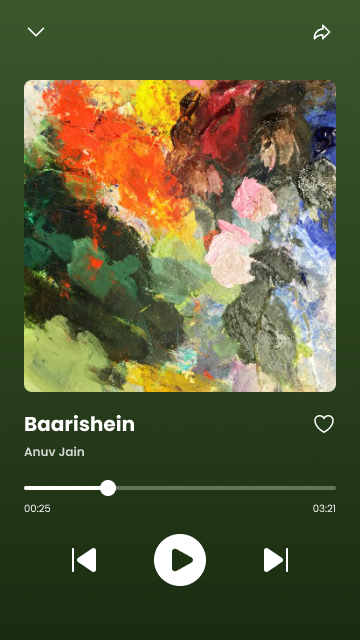
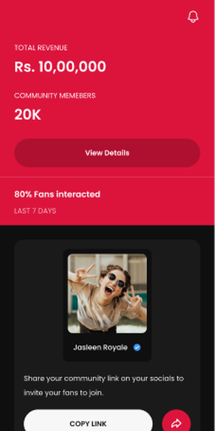
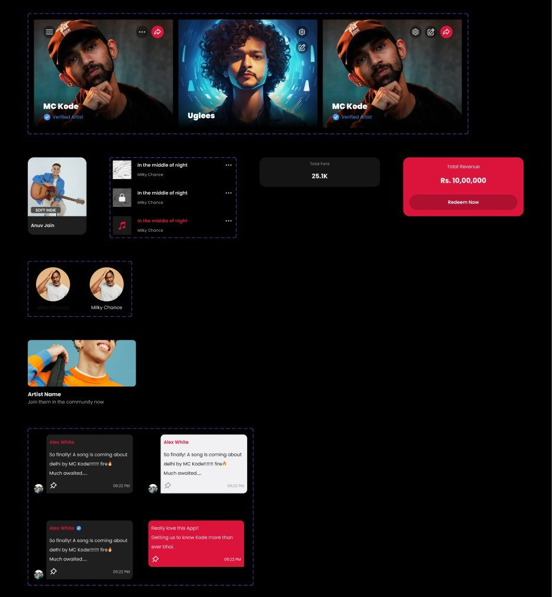
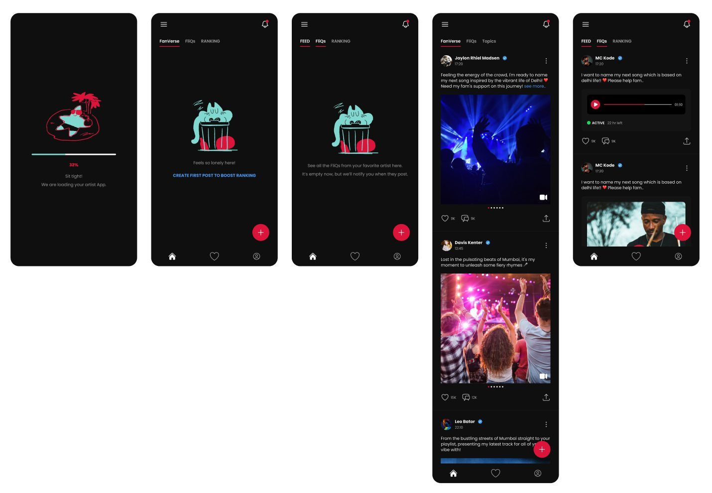
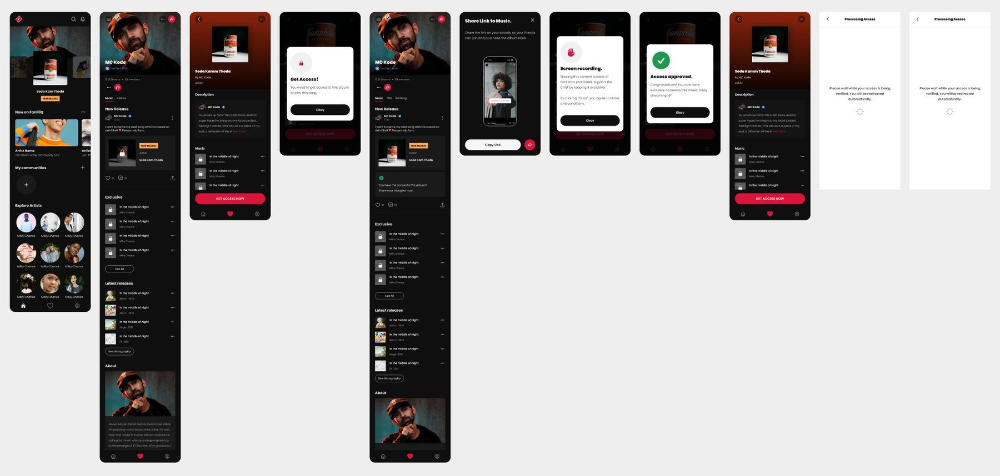
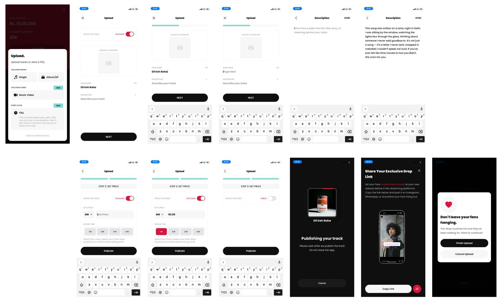
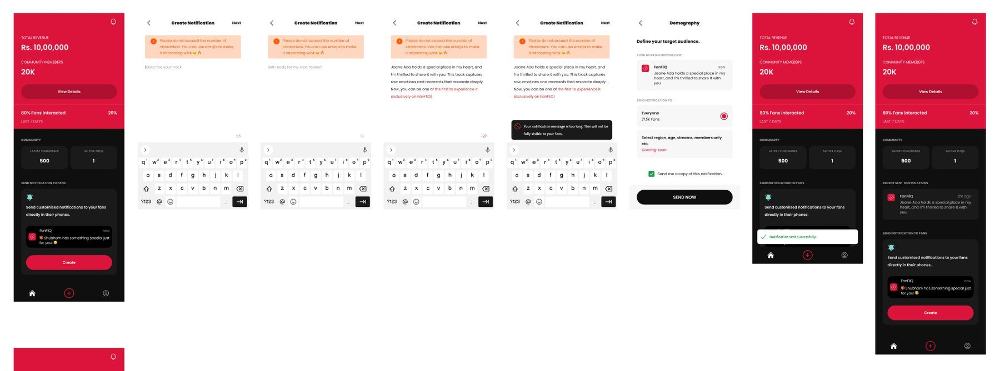

FanFliQ
Artists own their audience. Fans get closer.



Context
FanFliQ is a two-sided music platform. Fans join an artist's community, get exclusive drops before streaming platforms and talk to the artist directly. Artists release music and video, set a price, message every fan and see who their audience actually is.
The problem
An independent artist with 500K monthly listeners has no idea who those listeners are, or how to reach them. Streaming platforms own the relationship, and the artist's best fans have no way to get closer.
Research
How
What we learned
Fans want access, not content
Early listens and a direct line to the artist matter more than another feed.
Artists want names, not numbers
Who listened, where they live and how to reach them again.
Releases fade in a day
A drop needs a window, a price and a reason to share.
Who it's for
The independent artist
Releases monthly, promotes on Instagram, earns little from streams.
The superfan
Shares every release and wants to be first.
Structure and direction
One system for two apps
Dark, music-first UI with a single red accent. Artist cards, track rows, chat bubbles and FliQ posts shared across the fan and artist apps.

The design
Fan app: feed, FliQs and search
Loading, empty and full states for the feed, FliQs (time-limited posts with polls and audio) and artist search.

Exclusive drops
Artist page, a new release locked behind access, screen-recording protection, access approved and share-to-unlock.

Artist app: upload, price, publish
Upload a single, album or video, set an exclusive window and price, publish and share the drop link.

Artist app: reach every fan
Revenue and community at a glance, then a push notification to every fan with live character limits and audience targeting.

Key decisions
Exclusive windows
Releases stay on FanFliQ for one to four weeks before streaming, so being a fan pays off.
FliQs, not posts
Time-limited posts with polls and audio make every update a moment.
Every state designed
Loading, empty, error and success states for both apps.
Artists own the list
Notifications go straight to fans' phones, no algorithm in between.
Outcome
Want this depth
on your product?
20 minutes. You leave with a plan, even if we don't work together.
Replies within 24 hours.